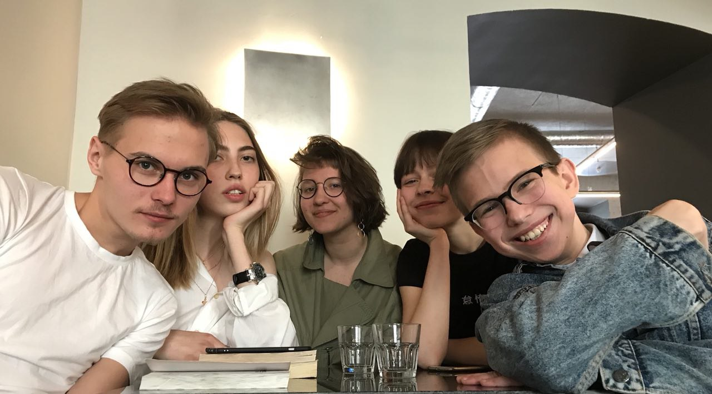

книжный клуб кооператив 21 апреля: заметка
сегодня нас было целых пять штук!
всего за полтора часа мы обсудили все последующие книги:
- О Фотографии Сьюзен Сонтаг
- Breakfast at Tiffany’s
- Преступление и Наказание
- Одиссей против Хорьков Вальвиц
- Завтрак для Чемпиона Воннегут
- Москва-петушки Ерофеев
- дэнс дэнс дэнс Харуки Мураками
- Война и Мир Толстой
- Заводной Апельсин
- Steve Jobs by Walter Isaacson
и последующих фотографов:
и последующие рандомные топики:
и сделали вот эту красивую фотографию:

(в следующий раз сфотографируемся на зенит!)
в следующий раз собираемся 29го апреля в час дня, приходите, ждём!